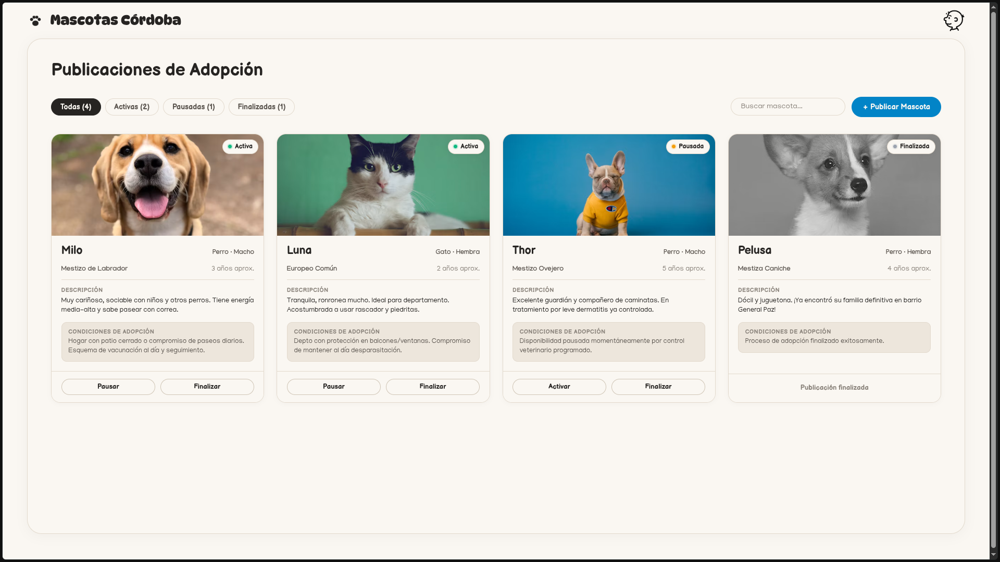
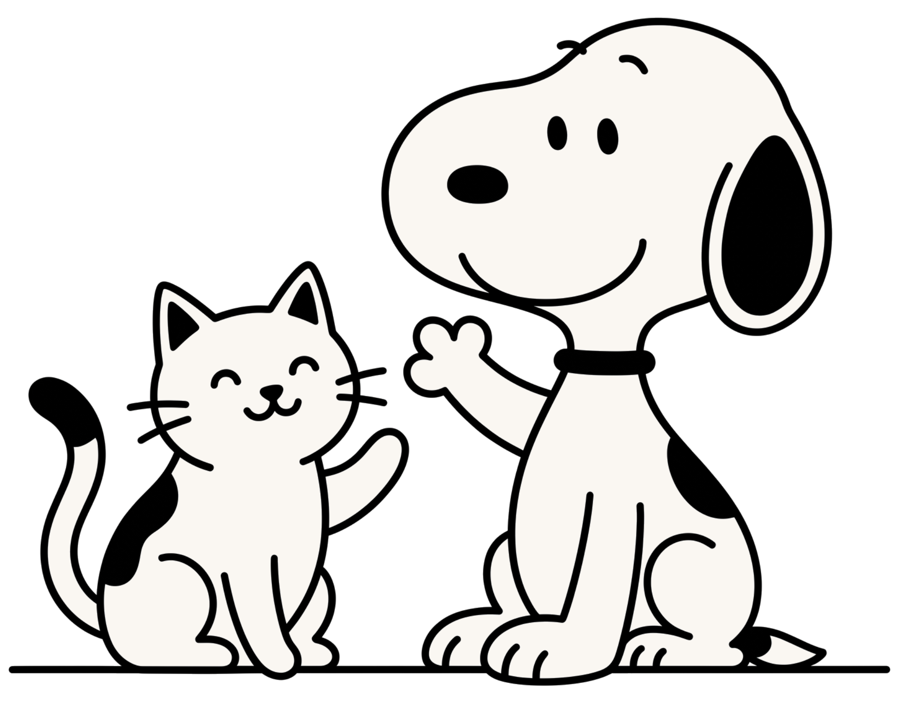
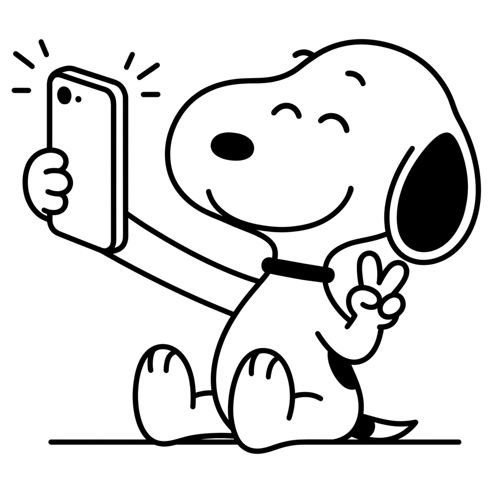

Mascotas Córdoba
Municipalidad de Córdoba
Programa Municipal de Bienestar Animal
Perfil Refugio & Adopción (RF13 / RF15)
Edición Oficial 2026
Manual de Marca & Sistema de Diseño Web
Guía maestra de identidad visual, restricciones de marca y especificaciones de ingeniería web para el software oficial de gestión y adopción de animales de la Municipalidad de Córdoba.
01 · Identidad Visual Básica
El Isotipo y sus Distintas Versiones
El símbolo corporativo representa la huella de bienestar animal: una almohadilla elíptica acogedora rodeada por cuatro almohadillas digitales en arco. Acompaña a la marca denominativa "Mascotas Córdoba" expresando ternura, rescate y protección integral.
Principio de Adaptabilidad Visual
El isotipo debe implementarse en la variante adecuada de acuerdo con el espacio disponible y la jerarquía del soporte: horizontal para barras de navegación, vertical para portadas o material impreso, sigla/reducida para favicons o avatares de software, y con lema para comunicaciones institucionales solemnes.
Mascotas Córdoba
MC
Mascotas Córdoba
Programa Municipal de Bienestar Animal
1.5 Área de Protección y Proporciones
Zona de Exclusión (Clearspace "X")
Para garantizar la visibilidad e impacto del isotipo, se define un área de reserva perimetral libre de cualquier interferencia tipográfica o gráfica.
- El valor de separación X equivale a la altura de la almohadilla elíptica central de la huella.
- Ningún texto, botón, divisor o elemento decorativo puede situarse a menos de 1X de distancia de los bordes externos del logotipo.
- En entornos digitales, se traduce a un padding mínimo de
12pxen dispositivos móviles y18pxen pantallas de escritorio.
Variantes de Contraste de Fondo Aprobadas
El isotipo y su texto institucional solo pueden aplicarse sobre fondos contrastantes autorizados:
- Fondo Crema Lienzo (#FAF7F2): Huella en Celeste Principal (#0284C7) y texto en Carbón Cálido (#262422). Aplicación estándar.
- Fondo Arena Suave (#EDE6DC): Idéntica aplicación cromática, conservando óptimo contraste.
- Fondo Celeste Bruma (#E0F2FE): Huella en Celeste Institucional y texto en Carbón Cálido.
- Fondo Carbón Cálido (#262422): Huella en Celeste Principal y texto en Crema Lienzo (#FAF7F2). Nunca usar blanco puro.
1.6 Restricciones de Marca (Do's & Don'ts)
✓ Uso Permitido
Utilizar siempre los vectores SVG oficiales sin alterar proporciones entre el símbolo y la tipografía.
✕ Prohibido: Deformación
Queda prohibido estirar, comprimir horizontalmente o modificar la relación de aspecto del isotipo.
✕ Prohibido: Rotación
No rotar la huella en ángulos arbitrarios. La inclinación de las almohadillas es simétrica y vertical.
✕ Prohibido: Efectos o Sombras Duras
No añadir biseles, sombras paralelas duras, trazos exteriores (strokes) ni resplandores de neón.
02 · Sistema de Color
Paleta Cromática y Tokens Oficiales
Construida sobre un lienzo cálido y afectivo. Reemplaza la frialdad aséptica del blanco hospitalario por tonos crema y arena de protectora, acompañados por un celeste cielo de confianza municipal.
Regla de Oro Obligatoria: Prohibición de Blancos y Negros Puros
Queda terminantemente prohibido el empleo de blanco puro (#FFFFFF / rgb(255,255,255)) y negro puro (#000000 / rgb(0,0,0)) en cualquier elemento de la interfaz. Los fondos y superficies claras utilizan Crema Lienzo (#FAF7F2), mientras que los textos oscuros utilizan Carbón Cálido (#262422). Esto previene la fatiga visual por deslumbramiento y brinda una calidez institucional de refugio.
2.1 Fondos y Superficies de Interfaz
Lienzo Base
Crema Lienzo
#FAF7F2
--color-bg-canvas / --color-bg-surface
Fondo predominante de toda la plataforma web, ventanas modales y tarjetas de lectura.
Arena Suave
Arena Suave
#EDE6DC
--color-bg-muted / --color-bg-sand
Fondo un poco más oscuro para cajas secundarias, condiciones de adopción y badges.
Borde Sutil
Arena Borde Tenue
#E2D9CC
--color-border-subtle
Líneas divisorias suaves, contorno de tarjetas y separadores visuales sin estridencias.
Borde Medio
Arena Borde Medio
#CFC4B5
--color-border-strong
Bordes de inputs de formulario en reposo, botones secundarios y marcos delimitadores.
2.2 Acentos de Acción e Identidad Institucional
Acento Primario
Celeste Principal
#0284C7
--color-accent
Color principal de acción institucional (+ Publicar Mascota, logo institucional y focos).
Interactivo
Celeste Interactivo
#0369A1
--color-accent-hover
Estado hover y focus activo en botones y elementos interactivos sin añadir glows.
Celeste Bruma
Celeste Bruma
#E0F2FE
--color-accent-soft
Curva de fondo orgánica del login, selección de tarjetas y chips suaves de acento.
Tenue
Celeste Tenue
#F0F9FF
--color-accent-light
Fondos de alerta informativa y previsualizaciones ligeras de interfaz.
2.3 Contrastes Neutros y Jerarquía de Texto
Texto Primario
Carbón Cálido
#262422
--color-text-main
Títulos principales, nombres de mascotas y textos de máxima jerarquía. No usar #000000.
Texto Secundario
Pizarra Cálida
#5C5650
--color-text-muted
Subtítulos, metadatos estructurados, párrafos descriptivos y condiciones reglamentarias.
Texto Sutil
Topo Suave
#8A837B
--color-text-subtle
Placeholders de formularios, accesos de prueba discretos y textos deshabilitados.
2.4 Estados Semánticos (Monocromático con Punto Indicador Dot)
Para evitar una interfaz saturada con etiquetas de colores estridentes, todos los badges de estado comparten la misma cápsula en Arena Suave (#EDE6DC) con tipografía en Carbón Cálido. La diferenciación semántica se realiza exclusivamente mediante un punto indicador (Dot) de 8px:
Activa
Dot Verde Menta Salvia (
#10B981)
Indica que la mascota se encuentra inmediatamente disponible para iniciar proceso de adopción responsable.
Pausada
Dot Ámbar Cálido (
#F59E0B)
Disponibilidad suspendida temporalmente (evaluación veterinaria, tratamiento o postulación en curso).
Finalizada
Dot Gris Ceniza Cálido (
#9CA3AF)
Proceso de adopción completado con éxito. La tarjeta de la mascota pasa a escala de grises cálida.
03 · Tipografía Oficial
Tríada Tipográfica del Sistema
Cada familia tipográfica cumple un rol técnico y expresivo estrictamente delimitado para evitar confusión y garantizar máxima claridad en el software.
3.1 DynaPuff (Google Fonts)
Mascotas Córdoba
Tipografía Display de fantasía, redondeada y esponjosa. Posee un fuerte carácter afectivo y lúdico, pero su legibilidad decae drásticamente en textos funcionales.
Uso permitido: Exclusivamente la marca denominativa "Mascotas Córdoba".
Prohibición estricta: Nunca emplear en títulos de pantalla, nombres de mascotas, botones, tablas ni textos de interfaz.
3.2 Balsamiq Sans (Google Fonts)
Publicaciones · Milo & Luna
Manuscrita-geométrica de trazo redondeado, sumamente cálida, cercana y con óptima legibilidad en pantallas de mediana y alta densidad.
Uso permitido: Títulos de páginas (H1 a H6), nombres de mascotas en tarjetas, textos de botones (+ Publicar Mascota, Pausar), badges y pestañas.
Pesos oficiales: Regular 400 y Bold 700.
3.3 Manjari (Google Fonts)
Sociable, dócil y activo. Requiere patio cerrado y compromiso de castración antes de los 6 meses de edad.
Sans-serif humanista con ligera curvatura orgánica y ritmo de lectura sumamente descansado para párrafos largos y formularios.
Uso permitido: Párrafos descriptivos, condiciones de adopción, etiquetas de inputs, selects, textareas y tablas de datos sanitarios.
Pesos oficiales: Regular 400 y Bold 700.
3.4 Escala Tipográfica y Jerarquía en UI
| Nivel | Familia | Tamaño (Rem / Px) | Peso | Aplicación en el Software |
|---|---|---|---|---|
| Logotipo Marca | DynaPuff | 1.65rem (26px) | Bold 700 | Texto del Navbar institucional y portada oficial |
| Título Principal (H1) | Balsamiq Sans | 2.0rem – 2.4rem (32–38px) | Bold 700 | "Publicaciones de Adopción", encabezado de pantallas principales |
| Nombre de Mascota (H2) | Balsamiq Sans | 1.4rem (22px) | Bold 700 | Título de cada tarjeta en el listado de adopciones |
| Botones de Acción | Balsamiq Sans | 0.92rem (14.7px) | Bold 700 | "+ Publicar Mascota", "Pausar", "Activar", "Finalizar" |
| Pestañas / Filtros | Balsamiq Sans | 0.88rem (14px) | Bold 700 | "Todas (12)", "Activas (8)", "Pausadas (3)", "Finalizadas (1)" |
| Cuerpo / Párrafos | Manjari | 0.95rem (15.2px) | Regular 400 | Descripción de temperamento, historia y notas clínicas |
| Condiciones de Adopción | Manjari | 0.85rem (13.6px) | Regular 400 | Requisitos dentro de la caja de condiciones en tarjeta |
| Inputs y Formularios | Manjari | 0.95rem (15.2px) | Regular 400 | Valores ingresados en CUIL, nombre, especie, raza y edad |
04 · Creación y Arquitectura Web
Reglas de Diseño y Creación Web en la Aplicación Actual
Análisis exhaustivo y comparativo de cómo fue aplicado el sistema visual en la plataforma web actualmente en producción, con foco en la pantalla principal de publicaciones de adopción (/publicaciones) y los flujos del refugio.
4.1 Arquitectura del Lienzo y Ventana Contenedora
El Marco Contenedor Ventana (95% × 90%)
A diferencia de los sitios web genéricos con scroll infinito sin límites, la pantalla principal de Mascotas Córdoba implementa un contenedor ventana respirable (.canvas-card) que ocupa el 95% del ancho de la pantalla (95vw) y el 90% de la altura visual (90vh), con esquinas redondeadas en --radius-lg: 16px o 24px y borde sutil en #E2D9CC.
Navbar Superior Unificado
La barra de navegación es minimalista y flota suavemente sobre el lienzo. A la izquierda exhibe el isotipo horizontal en DynaPuff que enlaza directamente al inicio. A la derecha, un botón avatar circular despliega una tarjeta flotante de 24px de radio con los datos del refugio: razón social, CUIL, habilitación municipal y botón de cierre de sesión (cumpliendo RF15 de sesión interna).
Barra de Control y Pestañas de Filtro
Sobre la grilla de publicaciones se sitúa la barra de comandos que combina dos elementos fundamentales: a la izquierda, las pestañas en píldora ("Todas", "Activas", "Pausadas", "Finalizadas") con contadores numéricos reactivos; a la derecha, la caja de búsqueda integrada y el botón principal + Publicar Mascota.
4.2 Comparativa: Prototipo Original vs. Estado Actual de la Página Principal
Contraste directo entre el diseño conceptual original de la pantalla principal (prototipo_2.png) y las reglas de diseño aplicadas en la implementación actual del software:
Prototipo Original de Referencia
docs/prototipo_2.png

✓ Reglas del Prototipo Conservadas Fielmente
- Contenedor Ventana: Se mantuvo la superficie flotante de bordes redondeados (95% × 90%) en Crema Lienzo (#FAF7F2).
- Grilla de 4 Columnas: Distribución simétrica y respirable para lectura descansada de fichas animales.
- Caja de Condiciones en Arena Suave: Fondo en
#EDE6DCdiferenciado para requisitos de patio y esterilización. - Filtros por Pestañas (Pill): Segmentación instantánea por estado con contadores entre paréntesis.
- Publicación Finalizada en Escala de Grises: Foto con
filter: grayscale(100%) opacity(0.85)y mensaje pacífico "Publicación finalizada" sin botones de acción.
⚡ Optimizaciones y Reglas Aplicadas en Producción
- Botón Primario "+ Publicar Mascota": Integrado en la barra superior de comandos junto al buscador en Celeste Institucional (
#0284C7), permitiendo dar de alta sin fricción (RF13). - Búsqueda en Vivo Multicriterio: Input reactivo con icono de lupa que filtra en tiempo real por nombre, especie o raza.
- Reactividad Angular: Los contadores de pestañas se sincronizan automáticamente con el listado en memoria y base de datos.
- Dropdown Institucional del Refugio: Tarjeta flotante en el avatar que expone Razón Social, CUIL y Habilitación Municipal (RF15).
4.3 Anatomía de la Tarjeta de Adopción y Flujo de Estados
La tarjeta de mascota (.pet-card) es el componente central de la aplicación. Se estructuró minuciosamente para responder a los requerimientos del RF13 sin saturar la mirada del encargado del refugio:

Activa
Milo
Perro · Macho
DESCRIPCIÓN
Sociable, enérgico y muy cariñoso. Rescatado en barrio Alberdi, convive bien con otros perros.
CONDICIONES DE ADOPCIÓN
Hogar con patio cerrado, seguimiento veterinario regular y compromiso de castración.
1
Fotografía con Badge de Estado Flotante
Relación de aspecto protegida con object-fit: cover. En la esquina superior derecha se ubica el badge con el punto indicador cromático correspondiente (verde, ámbar o gris).
2
Encabezado en Balsamiq Sans & Especie/Sexo
Nombre en 22px con excelente jerarquía visual, acompañado lateralmente por la especie y el sexo en Manjari bold.
3
Caja de Condiciones en Arena Suave (#EDE6DC)
Diferenciada del fondo de la tarjeta para resaltar las obligaciones reglamentarias y tenencia responsable sin recurrir a colores estridentes.
4
Regla de Transición de Estados & Fotografía Finalizada
Al transicionar a Finalizada, los botones de acción se ocultan y la imagen aplica filter: grayscale(100%) opacity(0.85), comunicando con ternura que la mascota ya encontró su hogar definitivo.
4.4 Geometría, Botones y Microinteracciones
Normas de radios de curvatura, elevación sutil y comportamiento interactivo aplicadas transversalmente en toda la interfaz web:
Radios de Curvatura (Tokens)
--radius-sm: 6px
Inputs y selectores
--radius-md: 10px
Cajas secundarias y alertas
--radius-lg: 16px
Tarjetas de mascota y modales
--radius-pill: 9999px
Botones primarios y badges
Botones de Acción (Balsamiq Sans)
Acción principal (Celeste Institucional)
Acción neutra en Arena Borde
Activa
Badge de estado con Dot
Campos de Formulario (Manjari)
Foco suave en Celeste Institucional sin glow excesivo.
Filosofía de Microinteracciones: Cero Distracciones
La plataforma prioriza la eficiencia y tranquilidad de los voluntarios del refugio. Están estrictamente prohibidas las animaciones automáticas en bucle, marquesinas en movimiento o efectos de rebote (bounce). Las transiciones se limitan a cambios suaves de estado interactivo (transition: all 0.15s ease) en hover y foco de teclado.
05 · Arte e Ilustración
Ilustraciones Oficiales, Estética y Lineamientos
La plataforma utiliza un lenguaje ilustrativo cálido, amigable y humanista (estilo viñeta o cómic tradicional de trazo lineal inspirado en Snoopy / Peanuts), diseñado para conectar empáticamente con los encargados de refugios y los adoptantes.
5.1 Tipo de Ilustraciones y su Rol en el Software
Actualmente el software incorpora dos ilustraciones maestras con propósitos emocionales y funcionales específicos dentro de los flujos de autenticación y carga de datos:

Representa al perrito amigable (personaje canino estilo Snoopy) y a un gatito sonriente celebrando afectuosamente la adopción responsable con un choque de manos / patitas. Se encuentra anclada en la base inferior derecha de la pantalla de inicio de sesión (prototipo_1.png), conviviendo armónicamente con la onda orgánica en Celeste Bruma (#E0F2FE) y la huella central flotante.
- Personajes: Cachorro estilo Snoopy con collar oscuro y gatito doméstico sonriente, comunicando convivencia multiespecie armónica.
- Función: Generar un ambiente de bienvenida cálido, acogedor y empático para los administradores del refugio al autenticarse (RF15).
- Tratamiento y Opacidad: Opacidad plena (100%), apoyada en la línea inferior de la ventana, sin sombras duras ni efectos de brillo artificial.
- Canal Alfa: Fondo transparente obligatorio para integrarse con naturalidad sobre la curva celeste institucional.

Viñeta amigable del perrito estilo Snoopy sentado en el suelo tomándose una selfie con su smartphone y haciendo el gesto de la paz ✌️. Se ubica en el estado vacío del dropzone de fotos en el formulario de alta de publicación (prototipo_3.png / publicacion-form).
- Personaje: Perrito estilo Snoopy en pose simpática con cámara de smartphone y signo de la paz, invitando a retratar al animal rescatado.
- Función: Servir como guía afectiva (affordance y signifier) que invita al usuario a arrastrar o subir la fotografía de la mascota.
- Regla de Oro de Opacidad: Debe mostrarse estrictamente al 25% de opacidad (
opacity: 0.25) para no competir visualmente ni confundir al usuario haciéndole creer que ya hay una foto cargada. - Desaparición reactiva: Al momento en que el usuario sube o arrastra una fotografía real, la ilustración desaparece instantáneamente para exhibir la foto real al 100% de visibilidad.
5.2 Estética Visual y Lineamientos de Producción
Cualquier nueva ilustración que se incorpore en futuras etapas del Programa Municipal de Bienestar Animal debe cumplir estrictamente con los siguientes estándares gráficos y técnicos:
Estética y Lenguaje de Trazos
- Estilo de dibujo: Viñeta / Cómic tradicional de trazo lineal continuo (cartoon hand-drawn line art), inspirado en la estética noble y cercana de Peanuts / Snoopy.
- Morfología: Líneas redondeadas, curvas suaves y fluidas en Carbón Cálido (
#262422). Quedan prohibidos los vértices agresivos o ángulos puntiagudos. - Expresividad y emoción: Caricatura tierna y afectiva que exprese bienestar, juego, confianza, rescate y protección integral de perros y gatos.
- Formato técnico: Vectorial SVG nativo o archivos PNG en alta resolución (mínimo 1200px) con canal alfa de transparencia puro (sin fondo blanco opaco).
Paleta y Prohibiciones Terminantes
- Paleta aprobada: Cuerpos en Crema Lienzo (#FAF7F2), manchas sólidas en Carbón Cálido (#262422), acentos en Celeste Bruma (#E0F2FE) y detalles en Arena Suave (#EDE6DC).
- Prohibido - Corporate Memphis: Queda terminantemente prohibido el estilo corporativo genérico de figuras humanas hiper-desproporcionadas con pieles azules o violetas.
- Prohibido - 3D Hiperrealista: No se admiten renders 3D pesados, brillos plásticos ni texturas fotorrealistas que desentonen con la atmósfera comunitaria del refugio.
- Prohibido - Saturaciones Neón: Ningún gráfico puede incluir gradientes fluorescentes, púrpuras chillones ni destellos luminosos artificiales.